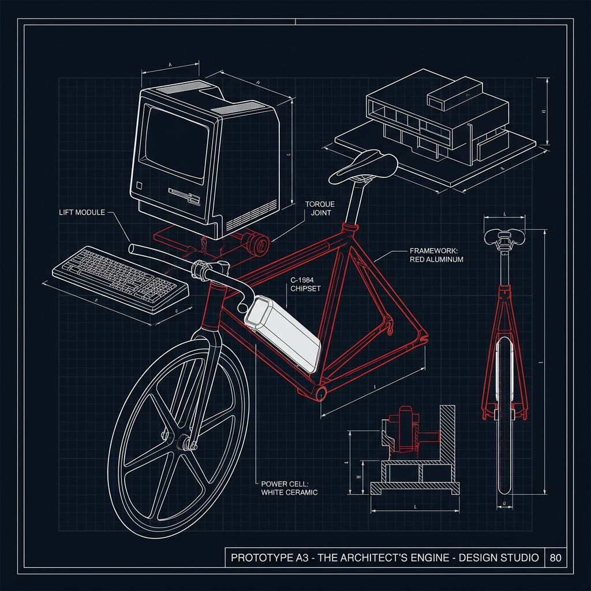
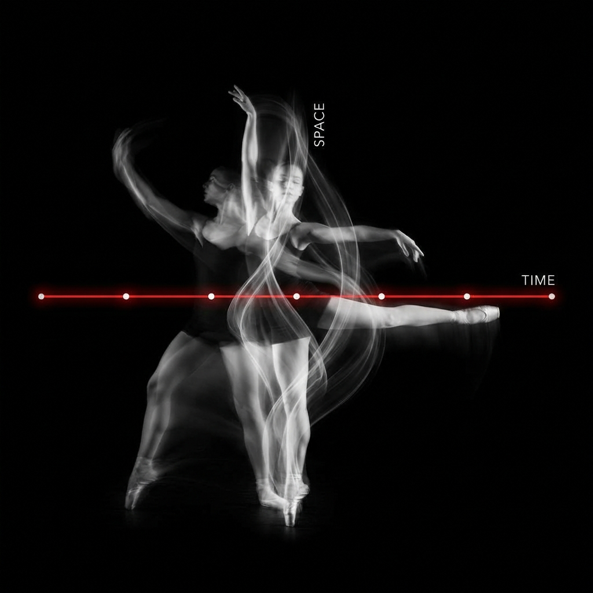
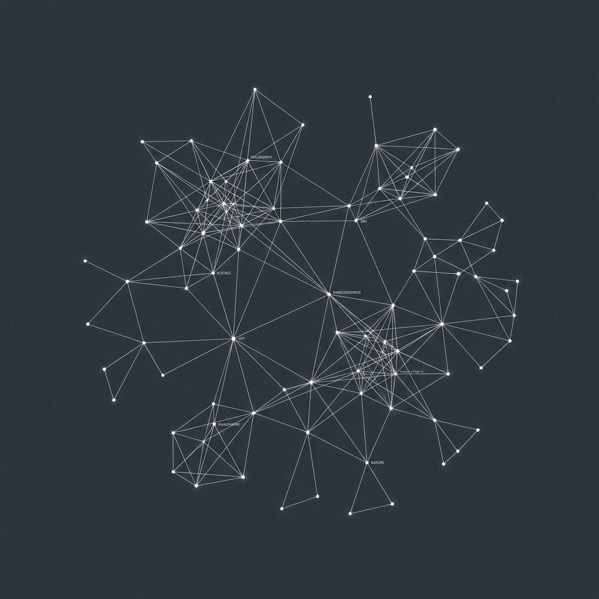
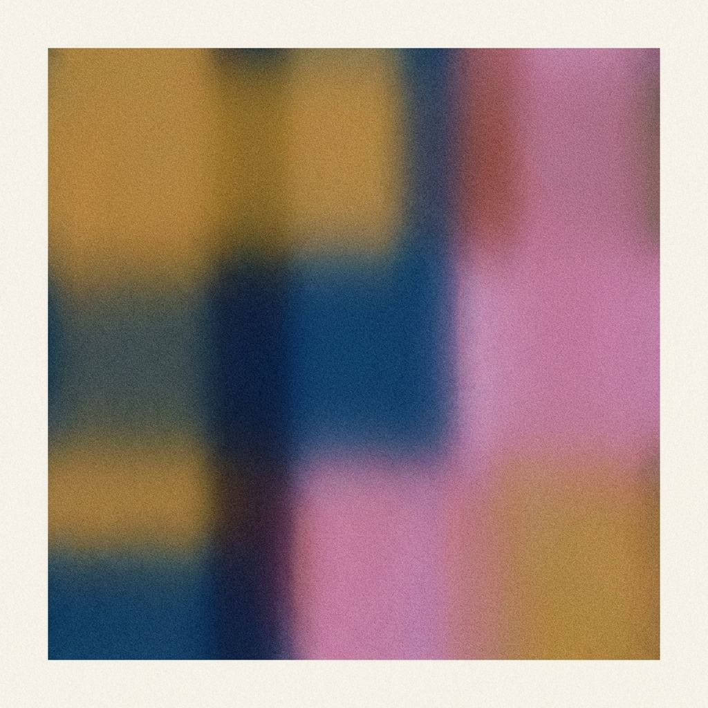

"Websites are not flyers. They are playful machines, choreographing attention across the canvas of space and time."
独立交互设计师 / 可能是卢德分子 / 时空导演
"他并没有追求复杂的前端框架或沉重的 3D 效果，而是通过对交互逻辑、心理暗示和空间隐喻的极致挖掘，将浏览器作为一个画布使用。"
| ORIGIN | London (1987) |
| FIRST_COMMIT | FrontPage @ Age 13 |
| LUDDITE_INDEX | High (Loves Mechanicals) |
| DIET | No Meat / Animal Products |

"我热爱自行车的机械结构，它能简单纯粹地放大人类体能的输入。它是自由的助推器：极少的法律限制，没有追踪定位。"
- 手工组装每一辆车 / 痴迷于零件的组合 / 终极逃跑工具

双轴联动交互。当你纵向滚动阅读时，顶部的横轴（时间）在同步横移。这种设计将时间物理化了，感知舞者 40 年生涯的厚度。

拒绝列表式目录，使用 D3.js 节点网络。把知识变成了一个可以游荡的宇宙。用户不再是阅读者，而是探险者。简单的拖拽让平面信息产生了物理体积感。

实验性相机。故意破坏了相机的清晰度，利用算法将实时画面转化为抽象的、柔和的色块和纹理。它不是在记录画面，而是在捕获环境的节奏。
反向设计工具：生成设计命题
* 只有 30 次尝试机会。技术上的"简陋"迫使你进行更高强度的思考。
经过精心分类和注释的知识路径。左侧标签系统 + 右侧资源卡片。一个教你如何发布网站的网站，本身就是最佳实践的示范。
摄影师作品集。极简的图像展示，快速的加载速度。网页本身退向幕后，让摄影作为主角。
> ON_SLOWNESS (关于慢下来)
"我的设计理念是向那些习以为常的数据驱动型设计发起挑战，**鼓励人们慢下来**。我鼓励浏览者去互动，不要担心如果没能立即呈现信息就会失去他们。"
> ON_REPAIRABILITY (关于完全控制)
"我几乎总是从零开始构建代码。这很重要：我必须理解代码里发生的一切，我有能力在出问题时修复它。就像我的自行车，出了问题我能亲手修好。"
> ON_THE_OLD_WEB (关于旧互联网的纯真)
"我怀念 2010 年以前的互联网。它被社交网络囚禁并拆解了。我是在论坛上长大的。搜索引擎曾能索引一切，而现在信息在私人网络里丢失了。"
> ON_RESTRICTION (关于限制带来的成长)
"在工作中，我依靠限制而成长。帕金森定律说工作会自动膨胀占满时间，我深信不疑。我热爱那些能像玩具一样被成年人拿来玩的东西。"
> ON_LANDSCAPE (关于 ViaMichelin 效应)
"我用一个叫 ViaMichelin 的 App，因为它有『风景路线』选项。它绕过高速公路，带你经过村庄和山脉。它给了你思考的时间，让你偶遇驻足点。"
[ THE_CASE_OF_WANDA_DÍAZ_MERCED ]
"我喜欢将信号从一种形式翻译成另一种形式。由于耳朵更加敏感，你可以通过听图表来发现肉眼无法察觉的异常。Wanda Díaz-Merced 将天体数据转化为声音，发现了视觉上被忽略的共振模式。"
"Maybe, I am just a Luddite."
反对权威，反感追踪，渴望那种能在不踩刹车的死飞自行车上穿梭伦敦街头的自由。
"浏览器的未来不是更快，而是更懂你。"